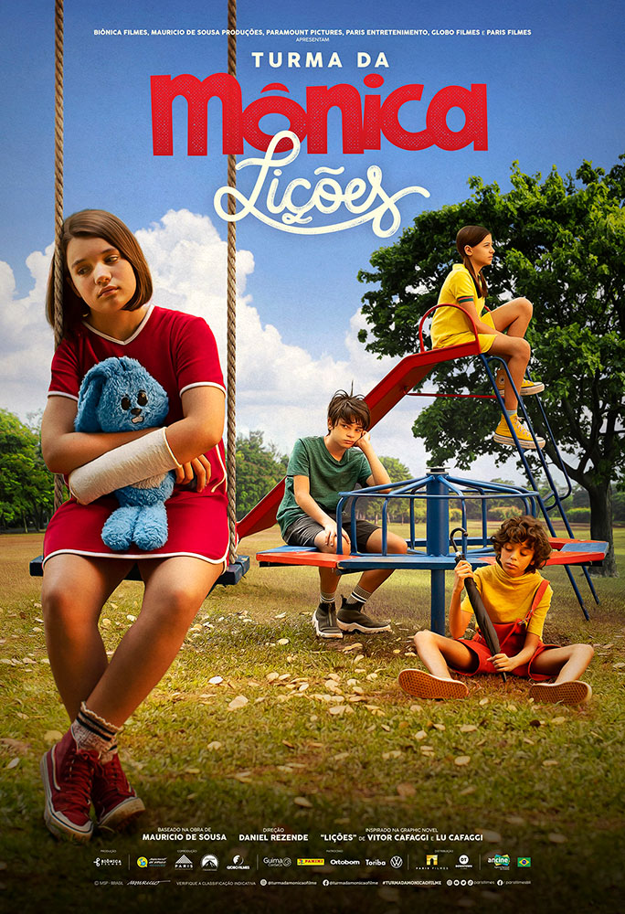
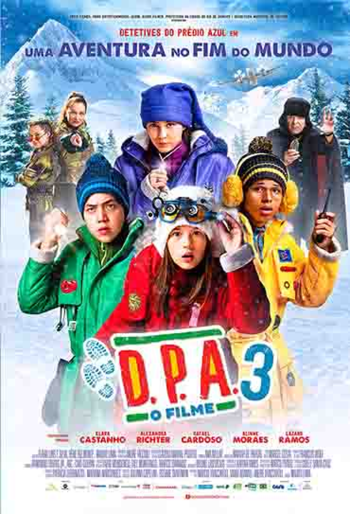
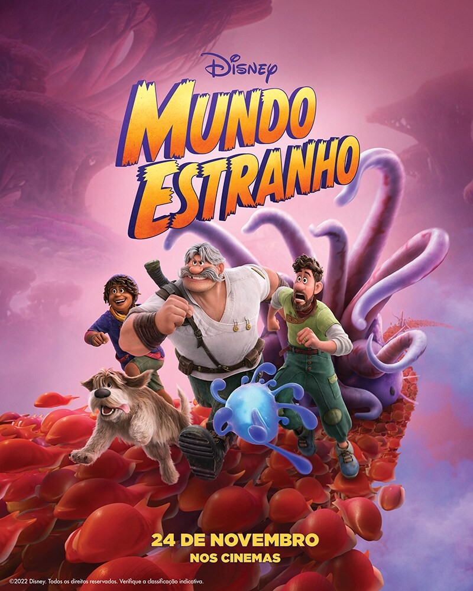

| Título do Filme | Link | Opinião | Capa |
|---|---|---|---|
| Turma da Mônica: Lições | Assistir | Além de descobrir sentimentos como a ansiedade, a turminha do Limoeiro também aprende sobre como lidar e encarar essas emoções com a ajuda da família e dos bons amigos. |  |
| Detetives do Prédio Azul | Assistir | Os Detetives do Prédio Azul, Pippo (Pedro Henriques Motta), Sol (Leticia Braga) e Bento (Anderson Lima) se infiltram na festa de Dona Leocádia (Tamara Taxman), a terrível síndica que é, literalmente, uma bruxa. Eles presenciam um crime mágico quase perfeito, que condena o Prédio Azul a uma demolição de emergência. |  |
| Mundo Estranho | Assistir | Os Clades são uma família lendária de exploradores cujas diferenças ameaçam derrubar sua missão mais recente e crucial em território desconhecido e traiçoeiro. |  |
| A Menina e o Dragão | Assistir | Uma jovem órfã se aventura pela China antiga para salvar da extinção os últimos dragões. | |